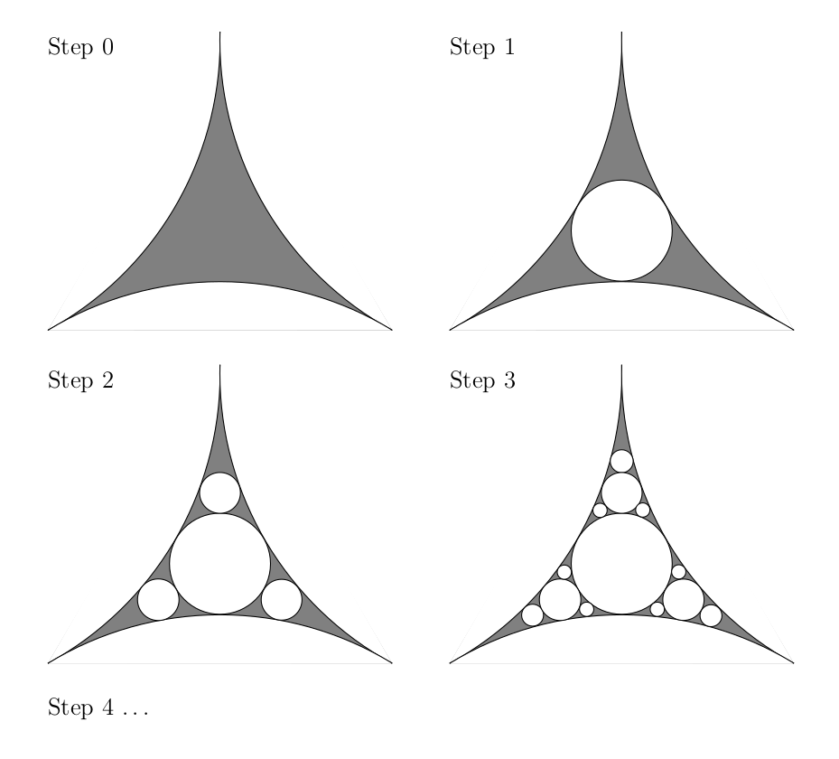

| Previous document | Next document |
Fractal Dimensions
There is no clear definition of a fractal. Benoit
B. Mandelbrot (the father of Fractal Geometry) defines a fractal
as a set for which the Hausdorff
dimension is strictly
greater than the topological dimension. Some mathematicians will also
request that the set had some self-similarity. This is the case for
the Sierpinski triangle for instance.
We only consider the Hausdorff
,
packing
, box-counting
and
similarity
dimensions. There are many more type
of dimension.
In this document, we assume that readers have some basic knowledge of measure theory.
Hausdorff Dimension
Suppose that (E,d) is a complete metric space. A countable cover 𝓐 of a set A ⊂ E is a countable collection of open sets in E such that A ⊂ ∪U∈𝓐 U. A countable ε cover 𝓐 of a set A is a countable cover of A such that diam(U) = sup{d(x,y) : x,y ∈ U} < ε for all U ∈ 𝓐. Let
and
for s ≥ 0. The value 𝑯s(A) is called the s-dimensional Hausdorff outer measure of A. Since 𝑯s(A,ε1) ≥ 𝑯s(A,ε2) for ε1 ≤ ε2, we have that
Definition: A set A ⊂ E is measurable in the sense of Carathéodory if and only if 𝑯s(A) = 𝑯s(A ∩ B) + 𝑯s(B ∖ A) for all sets B ⊂ E.
Lebesgue gave an equivalent definition of measurable sets using inner measure. Lebesgue's definition of measurable sets is more convenient than Carathéodory's definition to prove results about measure and integration. However, since we do not plan to prove any results about measure and integration, we do not need to present this definition. Carathéodory's definition is enough for our need.
Theorem: The collection 𝓜 of all the measurable sets with respect to the s-dimensional Hausdorff outer measure is a σ-algebra and 𝑯s restricted to 𝓜 defines a measure on 𝓜. This measure is called the s-dimensional Hausdorff measure. We write 𝑯s(A) = 𝑯s(A) for A ∈ 𝓜.
The smallest σ-algebra that contains the
open sets is called the Borel algebra and denoted
𝓑. The elements of
𝓑 are called Borel sets.
Since
𝑯s(A ∪︀ B)
= 𝑯s(A)
+ 𝑯s(B) for all sets
A,B such that
dist(A,B) = inf{d(x,y) : x ∈ A and y ∈ B} > 0,
it can be proved that the Borel sets are measurable sets according to
the previous definition (see
). We mainly consider Borel sets in this document. This is
sufficient to define the dimension
of a
fractal
.
Proposition: Suppose that A is a Borel set and 0 < s < t. If 𝑯s(A) < ∞, then 𝑯t(A) = 0. If 𝑯t(A) > 0 , then 𝑯s(A) = ∞.
Proof (sketch): We have that 𝑯t(U,ε) ≤ (diam(U))t ≤ εt-s(diam(U))s for all open sets U such that diam(U) ≤ ε. Thus
for all open sets U such that diam(U) ≤ ε. Since all outer measures M that satsify M(U) ≤ (diam(U))s for all open sets U such that diam(U) ≤ ε must satisfy M(A) ≤ 𝑯s(A,ε) for all Borel sets A, we get that
for all Borel sets A. Hence, if 𝑯s(A) < ∞, then
If 𝑯t(A) > 0, then
∎
It follows from the previous proposition that there exists a unique value d ∈ [0,∞] such that 𝑯s(A) = 0 for s > d and 𝑯s(A) = ∞ for s < d.
Definition: Suppose that A is a Borel set. The value d defined above is the Hausdorff dimension of the set A. We write dim𝑯(A) = d.
The Hausdorff dimension satisfies properties that a dimension is expected to satisfy.
Proposition: Suppose that A and B are Borel sets. If A ⊂ B, then dim𝑯(A) ≤ dim𝑯(B).
Proof: For all s > dim𝑯(B), we have that 𝑯s(A) ≤ 𝑯s(B) = 0. Thus dim𝑯(A) < s for all s > dim𝑯(B). Therefore dim𝑯(A) ≤ dim𝑯(B). ∎
Proposition: Suppose that A and B are Borel sets. Then dim𝑯(A ∪ B) = max(dim𝑯(A),dim𝑯(B)).
Proof: We have that
and
Thus 𝑯s(A ∪ B) ≤ 𝑯s(A)+𝑯s(B) = 0 for s > max(dim𝑯(A),dim𝑯(B)). Hence dim𝑯(A ∪ B) < s for all s > max(dim𝑯(A),dim𝑯(B)). Therefore dim𝑯(A ∪ B) ≤ max(dim𝑯(A),dim𝑯(B)). We get the reverse inequality from the previous proposition since A ⊂ A ∪︀ B and B ⊂ A ∪︀ B. ∎
Definition: A function f: E1 → E2 between two metric spaces (E1,d1) and (E2,d2) is a simularity function with similarity ratio C > 0 if d2(f(x),f(y)) = C d1(x,y) for all x,y ∈ E1.
We note that similarity functions are continuous and one-to-one functions.
Proposition: Suppose that f: E1 → E2 is a similarity function with similarity ratio C > 0. Moreover, suppose that A ⊂ E1 is a Borel set and s > 0. Then 𝑯s(f(A)) = Cs 𝑯s(A). In particular, dim𝑯(f(A)) = dim𝑯(A).
Proof: Without lost of generality, we may assume that E2 = f(E1). Hence, f-1: E2 → E1 is well defined. Moreover, we have that d1(f-1(x),f-1(y)) = C-1 d2(x,y) for all x,y ∈ E2. Thus f-1 is a continuous function. Since f: E1 → E2 is an homeomorphism, we have that f defines a bijection between the Borel algebra on E1 and the algebra on E2.
Since diam(f(U)) = C diam(U) for all sets U ⊂ E1, we get that
for all sets U ⊂ E1. Moreover, since f is an homeomorphism, we also get that
Hence
= inf{∑U∈𝓐 (diam(f(U)))s : 𝓐 is a countable ε cover of A}
= Cs inf{∑U∈𝓐 (diam(U))s : 𝓐 is a countable ε cover of A} = Cs 𝑯s(A,ε)
for all sets A ⊂ E1. Therefore, if we take the limit on both sides of the previous equality as ε goes to 0, we get that 𝑯s(f(A)) = Cs 𝑯s(A). Since C > 0, we get from this relation that 𝑯s(f(A)) = 0 (resp. ∞) if and only if 𝑯s(A) = 0 (resp. ∞). Therefore dim𝑯(f(A)) = dim𝑯(A) for all Borel sets A ⊂ E1. ∎
We end this section by computing the Hausdorff dimension of the famous Cantor middle-third set. Recall that the Cantor middle-third set is the set K = ∩k>0Kk where K1 = [0,1/3] ∪ [2/3,1], K2 = [0,1/9] ∪ [2/9,1/3] ∪ [2/3,7/9] ∪ [8/9,1], and so on.

Proposition: Let K be the Cantor middle-third set. Then dim𝑯(K) = ln(2)/ln(3) where the Hausdorff measure 𝑯s(K) used to compute the Hausdorff dimension is generated from the complete metric space (E,d) = (ℝ,|·|).
Proof: Let s = ln(2)/ln(3). We proof that 𝑯s(K) = 1.
We first prove that 𝑯s(K) ≤ 1. Given ε > 0, we choose a positive integer k such that 3-k < ε/2. It follows naturally from the procedure to define K that we can cover K with 2k closed intervals Kk,j for 1 ≤ j ≤ 2k such that diam(Kk,j) = 3-k and dist(Kk,j1,Kk,j2) ≥ 3-k for j1 ≠ j2.

Given any r > 1 closed enough to 1, we can slightly expand each closed interval Kk,j to get an open interval Ij such that diam(Ij) = 3-kr < ε, Kk,j ⊂ Ij and Ij1 ∩ Ij2 = ∅ for j1 ≠ j2. Hence
because (3-k)s = (3s)-k = 2-k. Since this is true for all r > 1, we get that 𝑯s(K,ε) ≤ 1 for all ε > 0. Therefore, 𝑯s(K) = 𝑯s(K) ≤ 1.
We now prove that 𝑯s(K) ≥ 1. It is enough to prove that ∑U∈𝓚 (diam(U))s ≥ 1 for all countable ε cover 𝓚 of K. Since K is compact, we may assume that 𝓚 is finite. We note that any open set U ∈ 𝓚 can be expressed as U = V1 ∪ R ∪ V2 where
- R is a closed interval with end points in K,
- Vi is an open set such that K ∩ Vi = ∅ for i = 1,2, and
- v1 < r < v2 for all r ∈ R and vi ∈ Vi for i = 1,2.

Since diam(U) > diam(R), we may replace that the elements of 𝓚 by closed intervals with end points in K. Let 𝓚' be the collection of these closed intervals. Every closed interval R ∈ 𝓚' can be expressed as R = R1 ∪ V ∪ R2 where
- R1 and R2 are closed intervals with end points in K,
- V ⊂ R is an open interval with the largest possible diameter such that K ∩ V = ∅, and
- r1 < v < r2 for all r1 ∈ R1, r2 ∈ R2 and v ∈ V.

We have by construction that diam(Ri) ≤ diam(V) for i = 1,2. We then get from (diam(K1) + diam(K2))/2 ≤ diam(V) that
≥ (3/2)s(diam(K1) + diam(K2))s
= 2((1/2)diam(K1) + (1/2)diam(K2)s
≥ 2((1/2)diam(K1)s + (1/2)diam(K2)s)
= diam(K1)s + diam(K2)s ,
where the second equality comes from 3s = 2 because s = ln(2)/ln(3), and the second inequality comes from the fact that (λa + (1-λ)b)s ≥ λas + (1-λ)bs because t ↦ ts is concave down on ]0,∞[ for s < 1. If Ri ≠ Kk,j for some values of k and 1 ≤ j ≤ 2k, we repeat the previous procedure with R replaced by Ri. After a finite number of repetitions, we get that diam(R)s ≥ ∑ diam(Kkm,jm)s where the sum is over all the closed intervalles Kkm,jm ⊂ R of larger possible diameter. For instance, in the figure above, we get that diam(R)s ≥ ∑ diam(K3,4)s + diam(K2,3)s + diam(K3,7)s.
We repeat the procedure above for each of the closed intervals R ∈ 𝓚'. In fact, we repeat this procedure recursively on all the closed intervals R simultaneously and stop only when we have obtained closed intervals Kk,j where the integer k is the largest of the indices km that we get from the previous procedure applied to all the closed intervals R ∈ 𝓚'. In particular, we also apply the previous procedure recursively to the closed intervals of the form Kkm,jm when km < k. We get that
= ∑1≤i≤2k (1/(3k))s = ∑1≤i≤2k (1/3s)k = ∑1≤i≤2k 1/2k = 1 .
All the closed intervals of Kk are included in the sum because we have preserved the fact that K is a subset of our recursive decomposition. ∎
In general, it is not easy to compute the Hausdorff dimension of a set as the following example illustrates.
Example B: A version of the Apollonian gasket is constructed as it follows. We start with a curvilinear triangle produced by the external tangential intersection of three circles as in step 0 of the figure below.
- The first step is to remove the largest disk inscribed in the curvilinear triangle as in the figure below.
- The second step is to remove the largest disk inscribed in each of the 3 curvilinear triangles obtained from step 1 as in the figure below.
- The third step is to remove the largest disk inscribed in each of the 9 curvilinear triangles obtained from step 2 as in the figure below.
- ...
- The kth step is to remove the largest disk inscribed in each of the 3k-1 curvilinear triangles obtained at the previous step.
- ...

The exact value of the Hausdorff dimension of the Apollonian gasket is still unknown. It has been estimated to more than 100 decimals. It is about 1.305.... The reader can find in the book of a proof that the Hausdorff dimension of the Apollonian gasket is between 1 and 1 < ln(3)/ln(1+2×3-1/2) ≈ 1.43... inclusively. There are several versions of the Apollonian gasket. We will say more about this fractal at the end of this document.
A little historical note: Apollonius of Perga (240 BC to 190 BC approximately) was a Greek mathematician. One of his famous problem was to find a geometric method to draw a circle tangent to three other circles. This is the motivation for the name Apollonian gasket. The definition of gasket is the one used in sailing.
It can be proved that the topological dimension of a set is smaller
or equal to its Hausdorff dimension. The previous statement does not
mean anything since we have not defined what is the topological
dimension of a set. The reader should consult the book by
. He devotes a full chapter on the subject of
topological dimension. For this presentation, the intuitive
definition of topological dimension is enough. For instance, a smooth
surface in ℝ3 is of topological
dimension 2. Likewise, a smooth curve is of
topological dimension 1. The
word smooth in the previous statements is really
important. A curve that is simply continuous may not be of topological
dimension 1 as it is illustrated by the Peano's
space-filling curve which is of topological dimension 2.
The topological dimension is preserved by homeomorphims. However, as
we will see later, the Hausdorff dimension is not usually preserved by
homemorphisms. The topological dimension is a lot more
general than the dimension in linear algebra.
As expected, dim𝑯(ℝn) = n if the Hausdorff measure is deduced from the metric space (ℝn,d) where d is the Euclidean distance. In particular, we can shown that if the set K ⊂ ℝn contains an open set, then dim𝑯(K) = n.
Let 𝓛 be the collection of all sets {xj}1≤j≤J ⊂ [0,1] such that x1 < x2 < ... < xJ and J > 1. A continuous function g:[0,1] → E is of bounded variation if there exists a constant C such that ∑1≤j<J d(g(xj),g(xj+1)) ≤ C for all {xj}1≤j≤J ∈ 𝓛. We may then define the length of the curve L = g([0,1]) as the value length(L) = sup{xj}1≤j≤J∈𝓛 ∑1≤j<J d(g(xj),g(xj+1)).
Proposition: Suppose that g:[0,1] → E is a function of bounded variation and L = g([0,1]), then length(L) ≥ 𝑯1(L). In particular, if g is one-to-one, then length(L) = 𝑯1(L) and so dim𝑯(L) = 1.
A proof of this proposition can be found in the book of . The proof is not hard but a little longish. The obvious question that comes to mind is if there exist curves that are not of bounded variation and have Hausdorff dimension greater than 1. The answer is affirmative.
Example A: The next figure illustrates how the Kock
(or snowflake) curve is generated. The Hausdorff dimension of
this curve is ln(4)/ln(3) > 1.
We do not explain right now how to easily compute its Hausdorff
dimension but do so after we have introduced the
similarity dimension
.

A function f: [0,1] → ℝn is a Hölder continuous of class s with 0 < s ≤ 1 if there exist two positive constants δ and C such that ∥f(x) - f(y)∥ ≤ C|x - y| for all x,y ∈ [0,1] satisfying |x - y| ≤ δ.
have proved the following result.
Proposition: If f: [0,1] → ℝ is a Hölder continuous function of class s, then the curve L = {(x,f(x)) : x ∈ [0,1]} satisfies 1 ≤ dim𝑯(L) ≤ 2 - s.
Unfortunately, there is no easy way to compute the Hausdorff dimension of a set in general. We present later two other types of dimensions that are relatively easier to compute. We also explain how they are related to the Hausdorff dimension.
Packing Dimension
As usual, we assume that (E,d) is a complete metric space. Given A ⊂ E, let
open balls U with centre in A and of radius less than ε/2} .
and
for s ≥ 0. Since 𝑷s(A,ε1) ≤ 𝑷s(A,ε2) for ε1 ≤ ε2, we have that
It can be shown that 𝑷s for s > 0 does not define an outer measure. The expression
for A ⊂ E defines an outer measure with the property that 𝑷s(A ∪︀ B) = 𝑷s(A) + 𝑷s(B) for all sets A,B such that dist(A,B) = inf{d(x,y) : x ∈ A and y ∈ B} > 0. As we did for the Hausdorff measure, we can define measurable sets according to 𝑷s and a measure for these sets.
Definition: A set A ⊂ E is measurable according to 𝑷s if and only if 𝑷s(A) = 𝑷s(A ∩ B) + 𝑷s(B ∖ A) for all sets B ⊂ E.
We have that all Borel sets are measurable according to this definition.
Proposition: The collection 𝓜 of all the measurable sets according to 𝑷s is a σ-algebra and 𝑷s restricted to 𝓜 defines a measure on 𝓜. This measure is called the s-dimensional packing measure. We write 𝑷s(A) = 𝑷s(A) for A ∈ 𝓜.
As for the Hausdorff measure, we have the following result.
Proposition: Suppose that A is a Borel set and 0 < s < t. If 𝑷s(A) < ∞, then 𝑷t(A) = 0. If 𝑷t(A) > 0 , then 𝑷s(A) = ∞.
Hence, we can define the dimension of a Borel set using the packing measure.
Definition: Suppose that A is a Borel set. The unique value d such that 0 < 𝑷d(A) < ∞ is the packing dimension of the set A. We write dim𝑷(A) = d.
Proposition: Suppose that A is a Borel set. Then dim𝑯(A) ≤ dim𝑷(A).
Proof (sketch): We first prove that 𝑯s(A,2ε) ≤ 2s𝑷s(A,ε).
The result is obvious if 𝑷s(A,ε) = ∞. So, we may assume that 𝑷s(A,ε) < ∞. The number of disjoint open balls of radius ε/2 and centre in A is finite. If it was infinite, we would then have that 𝑷s(A,ε) = ∞. Let 𝓐 = {Bε/2(xj)}1≤j≤J be a collection of disjoint open balls with their centre in A such that, given any x ∈ A, there exists j with Bε/2(x) ∩ Bε/2(xj) ≠ ∅. As mentioned before, the collection 𝓐 is finite. We have that
Since 𝓒 = {Bε(xj)}1≤j≤J is a countable ε cover of A, we have that
Thus 𝑯s(A,2ε) ≤ 2s𝑷s(A,ε) as claimed above. Hence,
In particular, we have that 𝑯s(U) ≤ 2s𝑷s(U) = 2s𝑷s(U) for all open sets U. Since all outer measures M that satisfy M(U) ≤ 𝑷s(U) for all open sets U must satisfy M(A) ≤ 𝑷s(A) for all sets A, we get that
for all Borel sets A. Since
we get dim𝑯(A) ≤ dim𝑷(A). ∎
Box-Counting Dimension
The packing dimension is not easier to compute than the Hausdorff dimension. We now introduce a type of dimension which literally fits between the Hausdorff and packing dimensions.
Given r > 0, let 𝓒r be the collections of all the squares of the form Ci,j = [ir,(i+1)r[ × [jr,(j+1)r[ for i,j ∈ ℤ. We have that ℝ2 is covered by the squares in 𝓒r and these squares are disjoint. Suppose that A ⊂ ℝ2 is bounded set and that 𝓐r ⊂ 𝓒r is the smallest collection of squares that covers A. Let N(A,r) be the number of squares in 𝓐r. Moreover, let 𝑩s(A,r) = ∑Ci,j∈𝓐rrs = N(A,r)rs. Note that 𝑩2(A,r) is the area of the region S = ∪Ci,j∈𝓐r Ci,j.
Proposition: Suppose that A ⊂ ℝ2 is a bounded set and that dim𝑩(A) = limr→0 ln(N(A,r))/ln(1/r) exists. Then, the limits Xs(A) = limr→0 𝑩s(A,r) exist for s ≠ dim𝑩(A). Moreover, Xs(A) = ∞ for s < dim𝑩(A), and Xs(A) = 0 for s > dim𝑩(A).
Proof: Suppose that 0 < dim𝑩(A) < ∞. Given t1 < dim𝑩(A) < t2, there exists R > 0 such that t1 < ln(N(A,r))/ln(1/r) < t2 for all 0 < r < R. Thus
and
for all 0 < r < R. Hence, r-t2 ≤ N(A,r) ≤ r-t1 for all 0 < r < R.
We first prove that s < dim𝑩(A) implies that Xs(A) = ∞. If s < dim𝑩(A), then we choose t2 > dim𝑩(A) as in the first paragraph. Hence
because s-t2 < 0.
We now prove that s > dim𝑩(A) implies that Xs(A) = 0. If s > dim𝑩(A), then we choose t1 < dim𝑩(A) as in the first paragraph of the proof. Hence
because s-t1 > 0.
Suppose that dim𝑩(A) = 0. To prove that Xs(A) = 0, we prove that limr→0 ln(N(A,r)rs) = -∞. We effectively have that
= limr→0 (-ln(N(A,r))/ln(1/r) + s)ln(r) = limr→0 s ln(r) = -∞
because limr→0 ln(N(A,r))/ln(1/r) = 0. The proof for the case dim𝑩(A) = ∞ is similar. ∎
Definition: Suppose that A is a Borel set. If it exists, the unique value dim𝑩(A) is called the box-counting dimension or Minkowski dimension of the set A.
To avoid any issue related to the existence for the limits used to define Xs(A) and dim𝑩(A) for a set A, it is preferable to consider Xs-(A) = lim infr→0 Xs(A,r) and dim𝑩-(A) = lim infr→0 (ln(N(A,r))/(ln(1/r)), or Xs+(A) = lim supr→0 Xs(A,r) and dim𝑩+(A) = lim supr→0 (ln(N(A,r))/(ln(1/r)). The value dim𝑩-(A) is called the lower entropy index and the value dim𝑩+(A) is called the upper entropy index.
The function Xs is not an outer measure. Likewise, the functions Xs- and Xs+ are not outer measures. We can proceed as we have done to define the Hausdorff and packing measures in order to define two outer measures from 𝑩s(·,r), and also two dimensions associated to these outer measures. They are respectively called the lower entropy dimension and upper entropy dimension. We will not present this topic. The box-counting dimension is unfortunately too rough to define the fractal dimension because the box-counting dimension respect the closure of a set. For instance, the box-counting dimension of the rational numbers ℚ is equal to box-counting dimension of its closure which is ℝ; namely, they are both of box-counting dimension 1. Nevertheless, the box-counting dimension is the dimension often used in applications because it can be estimated by counting the number of squares covering the set A to get N(A,r) and by computing N(A,r)/ln(1/r) for values of r approaching 0 in order to estimate numerically the limit limr→0 (ln(N(A,r))/(ln(1/r)).
Proposition: Suppose that A is a Borel set and that dim𝑩(A) exists. Then dim𝑯(A) ≤ dim𝑩(A) ≤ dim𝑷(A).
We have defined the box-counting dimension for subsets of ℝ2. The previous presentation could obviously be generalized to ℝn with n > 2.
Similarity Dimension
Proposition: Suppose that {C1, C2, ... , CJ} ⊂ ]0,1[. Then, there exists a unique number s ≥ 0 such that ∑1≤j≤J Cjs = 1. Moreover, s = 0 if and only if J = 1.
Proof: Let F: [0,∞[ → [0,∞[ be the function defined by F(s) = ∑1≤j≤J Cjs. The function F is a continuously differentiable function. Since 0 < Cj < 1 for all j, we get that F'(s) = ∑1≤j≤J Cjsln(Cj) < 0 for all s ∈ ]0,∞[ and lims→∞ F(s) = 0. Hence, we have that F is a strictly decreasing function from F(0) = J to 0 on the interval [0,∞[. If J > 1, it follows from the intermediate value theorem that there exists a unique value s > 0 such that F(s) = 1. If J = 1, then we must have s = 0 to get F(s) = 1. Obviously, s = 0 is only possible if J = 1. ∎
Recall that an iterative function systems (IFS) {fj}1≤j≤J is a collection of contractions on the complete metric space (E,d). Associated to this IFS, we define a function fc: Ec → Ec by
for all sets A ∈ Ec, where Ec be the space of non-empty compact subsets of E.
Almost all the IFS that we have presented are collections of functions fj: E → E that are the composition of rotations, translations, reflections and dilatations. Therefore, we have that d(fj(x),fj(y)) = Cjd(x,y) for all x,y ∈ E, where 0 < Cj < 1 is the contraction factor of fj. Such functions are called similarity functions. The numbers Cj are called similarity ratios. From now on, we assume that our IFS are collections of similarity functions.
Definition: Suppose that K ∈ Ec is the fixed point of the function fc defined by the IFS {fj}1≤j≤J, and that Cj is the similarity ratio of fj for 1 ≤ j ≤ J. The similarity dimension of K, denoted dim𝑺(K), is the unique value s ≥ 0 such that ∑1≤j≤J Cjs = 1.
The previous definition has a flaw. Considering IFS that are collections of similarity functions is not enough to ensure that the similarity dimension is well defined. The set K ∈ Ec may also be the fixed point of the function gc defined by another IFS {gi}1≤i≤I with similarity ratios Di for 1 ≤ i ≤ I respectively. The value of s that satisfies ∑1≤i≤I Dis = 1 is generally different than the value of s that satisfies ∑1≤j≤J Cjs = 1. Therefore, we need to add a condition on the IFS to ensure that the similarity dimension is independent of the IFS used to compute the similarity dimension. In fact, the condition proposed ensures that the IFS is unique.
Definition: We say that an IFS {fj}1≤j≤J satisfies the open set condition if there exists a bounded open set V ⊂ E such that ∪1≤j≤J fj(V) ⊂ V and fj1(V) ∩ fj2(V) = ∅ for j1 ≠ j2.
From now on, unless there is an indication to the contrary, we consider only IFS that satisfy the open set condition. Hence, the similarity dimension is well defined.
Theorem: Suppose that
- (E,d) = (ℝn,d) where d is the Euclidean distance,
- K ∈ Ec is the fixed point of the function fc defined by the IFS {fj}1≤j≤J,
- Cj is the similarity ratio of fj for 1 ≤ j ≤ J, and
- the IFS satisfies the open set condition.
Proof (sketch): We sketch the proof given in the book of . Note that K is a bounded set because K is compact. In particular, diam(K) < ∞. Let s = dim𝑺(K).
- The first step is to prove that there exists a Borel measure μ on ℝn such that μ(ℝn) = 1, the support of μ is contained in K, and μ(U) = ∑1≤j≤J Cjs μ(fj-1(U)) for all measurable sets U. To prove the existence of μ, we define a positive linear functional F on the space 𝓕 of continuous functions on K and use the Riesz representation theorem to get a measure μ such that ∫K f dμ = F(f) for all f ∈ 𝓕.
- The second step is to prove a useful technical result. Suppose that B is an open ball of radius r. Moreover, suppose that {Ui}1≤i≤I is a collection of disjoint open sets such that B1,i ⊂ Ui ⊂ B2,i for all i where the B1,i are open balls of radius q1r and the B2,i are open balls of radius q2r for some constants q1 and q2. Then B intersects at most (1+2q2)nq1-n sets Ui.
- Let Kj1,j2,...,jk
= fj1∘fj2 ...
∘fjk(K) for all
1≤ji≤J and k > 0.
Since each fj is a similarity function with
similarity ratio Cj, we have that
diam(Kj1,j2,...,jk)
= Cj1Cj2 ...
Cjk diam(K). Thus
∑{ji}1≤i≤k diam(Kj1,j2,...,jk)s = ∑{ji}1≤i≤k (Cj1Cj2 ... Cjk)s diam(K)sGiven ε > 0, since diam(Kj1,j2,...,jk) ≤ (max{Cj : 1≤j≤J})k diam(K) → 0 as k → ∞, there exists a positive integer k such that diam(Kj1,j2,...,jk) < ε for all indices. Since we may assume that the countable ε covers of K in the definition of 𝑯s(K,ε) are collections of closed sets instead of open sets, then {Kj1,j2,...,jk}j1,j2,...,jk is a countable ε covers of K for this choice of k. We get from the inequality above that 𝑯s(K,ε) ≤ diam(K)s. Since this is true for all ε > 0, we get that 𝑯s(K) = 𝑯s(K) ≤ diam(K)s < ∞ because K is a Borel set.
= (∑1≤j≤J Cjs)k diam(K)s = diam(K)s . - Suppose that V is the bounded open set in the
definition of the open set condition. Let
Vj1,j2,...,jk
= fj1∘fj2 ...
∘fjk(V) for all
1≤ji≤J and k > 0.
Since the sets Vj = fj(V)
are open disjoint sets by definition of the open set condition, we get
by induction that ∪1≤j≤J
Vj1,j2,...,jkj
⊂ Vj1,j2,...,jk
and
Vj1,j2,...,jkj ∩
Vj1,j2,...,jki = ∅ for
j ≠ i.
Since
{(fc)n(V)}n≥0
is a decreasing sequence of compact sets converging toward the fixed
point K, we have that
K = ∩n≥0
(fc)n(V).
In particular, this implies that
Kj1,j2,...,jk ⊂
Vj1,j2,...,jk
for all indices. We provide below a schematic representation of the
sets
Vj1,j2,...,jk
in the case where J = 3.

- We choose two open balls
B1 and B2
of radius q1 and
q2 respectively such that
B1 ⊂ V ⊂ B2.
Given r > 0, let 𝓛
be the collection of all finite
sequences {ji}1≤i≤k
obtained by truncating all the infinite sequences
{ji}i≥1
with 1 ≤ ji ≤ J
after k terms where k is the
smallest value such that
(min1≤j≤J Cj)r ≤ Cj1Cj2...Cjk ≤ r .Obviously, k is not necessarily the same for each infinite sequence. We have from (4) that the open sets Vj1,j2,...,jk for {ji}1≤i≤k ∈ 𝓛 are disjoints. Moreover, since each funciton fj is a similarity function with similarity ratio Cj, we have that each Vj1,j2,...,jk contains an open ball of radius Cj1Cj2...Cjkq1 (e.g. fj1∘fj2 ... ∘fjk(B1)) and so an open ball of radius (min1≤j≤J Cj)rq1. Likewise, each Vj1,j2,...,jk is contained in an open ball of radius Cj1Cj2...Cjkq2 (e.g. fj1∘fj2 ... ∘fjk(B2)) and so in an open ball of radius rq2. It follows from (2) that at most N = (1+2q2)n (min1≤j≤J Cj)-nq1-n sets of the form Vj1,j2,...,jk with {ji}1≤i≤k ∈ 𝓛 intersect open balls of radius r.
- Given an open ball B of radius
r < diam(V)/2, we have that
μ(B) ≤ ∑{ji}1≤i≤k ∈ 𝓛' μ(Vj1,j2,...,jk) = ∑{ji}1≤i≤k ∈ 𝓛' μ(fj1∘fj2 ... ∘fjk(V))where 𝓛' ⊂ 𝓛 is the set of sequences {ji}1≤i≤k ∈ 𝓛 such that Vj1,j2,...,jk ∩ B ≠ ∅. Note that we only need to consider the sets Vj1,j2,...,jk that intersect B becasue the support of μ is contained in K and Kj1,j2,...,jk ⊂ Vj1,j2,...,jk for all sequences.
= ∑{ji}1≤i≤k ∈ 𝓛' Cj1s μ(fj2∘fj3 ... ∘fjk(V))
= ∑{ji}1≤i≤k ∈ 𝓛' Cj1sCj2s μ(fj3∘fj4 ... ∘fjk(V))
= ... = ∑{ji}1≤i≤k ∈ 𝓛' Cj1sCj2s ...Cjks μ(V) ≤ ∑{ji}1≤i≤k ∈ 𝓛' Cj1sCj2s ...Cjks μ(ℝn)
≤ Nrs = N(diam(B)/2)s - Given any countable ε cover
𝓚 = {Ui}1<i<I
of K, we can choose open balls
Bi for 1 < i < I
such that {Bi}1<i<I
covers K and the radius of Bi
is diam(Ui)/2 (it may happen that
Ui ⊂ Bi for
all i but that is not required.)
Hence
1 = μ(K) ≤ ∑1≤i≤I μ(Bi) ≤ N ∑1≤i≤I (diam(Bi)/2)s = N ∑1≤i≤I diam(Ui)s .Thus 𝑯s(K,ε) ≥ 1/N. Since this is true for all ε, we get that 𝑯s(K) = 𝑯s(K) ≥ 1/N > 0.
- It follows from (3) and (7) that 0 < 𝑯s(K) < ∞. Thus dim𝑯(K) = s. ∎
In the previous theorem, the condition that the sets
fj(V) be disjoint ensures that there are
almost no overlapping
between the sets
fj(K) where K
is the fixed point of fc in
Ec. Namely,
𝑯s(fj1(K) ∩
fj2(K)) = 0 for
j1 ≠ j2
when s = dim𝑺(K)
= dim𝑯(K).
This is not hard to prove. Since the IFS is a collection of
similarity functions, we have that
∑1≤j≤J
𝑯s(fj(K))
= ∑1≤j≤J
Cjs 𝑯s(K)
= 𝑯s(K).
Since
K = fc(K)
= ∪1≤j≤J fj(K) and
0 < 𝑯s(K) < ∞, we get from
the properties of addition of a measure that the previous equality is
satisfied if and only if
𝑯s(fj1(K) ∩
fj2(K)) = 0 for
j1 ≠ j2.
This condition is often used as definition of self-similarty for
K.
Remark: If the IFS does not satisfy the open set condition, then dim𝑯(K) ≤ dim𝑺(K) where the value dim𝑺(K) may vary according to the selected IFS.
It is also true that dim𝑷(K) ≤ dim𝑺(K) and dim𝑷(K) = dim𝑺(K) if the IFS having K as fixed point satisfies the open set condition. A proof of this result is given in the book of . This implies that dim𝑯(K) = dim𝑩(K) = dim𝑷(K) = dim𝑺(K) when the IFS having K as fixed point satisfies the open set condition.
Example: We may now explain how we computed the Hausdorff dimension of the Kock curve in . The Kock curve is the fixed point K of the function fc defined by the IFS {fj}1≤j≤4 where
f2(x,y) = ((x/2+31/2y/2)/3+1/3,(-31/2x/2+y/3)/3),
f3(x,y) = ((-x/2+31/2y/2)/3+2/3,(-31/2x/2-y/3)/3) and
f4(x,y) = (x/3 + 2/3,0)
The function f2 is a counterclockwise rotation by π/3 radians composed with a dilation by 1/3 and followed by a translation by (1/3,0) and the function f3 is a counterclockwise rotation by 2π/3 radians composed with a dilation by 1/3 and followed by a translation by (2/3,0). Hence, the fj are similarity functions with the similarity ratio Cj = 1/3 for all j. Moreover, let h:[0,1] → ℝ be the function defined by
| ⎧ | x/31/2 if 0 ≤ x ≤ 1/2 | |
| h(x) = | ⎨ | |
| ⎩ | (1-x)/31/2 if 1/2 < x ≤ 1 |

Thus, the IFS satisfies the open set condition. We conclude from the previous theorem that dim𝑯(K) = dim𝑺(K) = s where ∑1≤j≤4 Cjs = 4(1/3)s = 1. Hence, dim𝑯(K) = s = ln(4)/ln(3) ≈ 1.26186.
Example: The Sierpinski triamgle K is the fixed point K of the function fc defined by the IFS {fj}1≤j≤3 given in . Hence, the fj are similarity functions with the similarity ratio Cj = 1/2 for all j. Moreover, if V is the open triangle V = {(x,y) : 0 < x < 1 and 0 < y < 1-x}, we have that ∪1≤j≤3 fj(V) ⊂ V and fj1(V) ∩ fj2(V) = ∅ for j1 ≠ j2. Thus, the IFS satisfies the open set condition. We conclude from the previous theorem that dim𝑯(K) = dim𝑺(K) = s where ∑1≤j≤3 Cjs = 3(1/2)s = 1. Hence, dim𝑯(K) = s = ln(3)/ln(2) ≈ 1.58496.
Remark: The Apollonian gasket that we have described in is the fixed point of the function fc defined by an IFS {fj}1≤j≤3 where the functions fj are neither contractions nor similarity functions. However, they are not expansions. The IFS satisfies the open set condition but that is not enough to use the similarity dimension to compute the Hausdorff dimension of the Apollonian gasket because the functions fj are not similarity functions.
We note that the Apollonian gasket is homeomorphic to the Sierpinski triangle. However, homeomorphisms do not preserve the Hausdorff dimension.
We leave it to the reader to write down the functions fj.
Remark: There exist some theoretical results concerning
the similarity dimension
of the fixed point
K of an IFS
{fj}1≤j≤J where the
functions fj are contractions but not
similarity functions.
References
The content of this document is mostly based on the following books and articles.
- M. Barnsley, Fractals Everywhere, Academic Press, Inc. (1988).
- A. S. Besicovitch and H. D. Ursell, Sets of fractional dimwnsion (V): On Dimensional Numbers of some Continuous Curves, J. London Math. Soc., 12 (1934), 18-25.
- G. A. Edgar, Measure, Topology, and Fractal Geometry, Undergraduate Text in Mathematics, Springer-Verlag (1990).
- K. J. Falconer, The Geometry of Fractal Sets, 85, Cambridge University Press (1985).
- J. Harrison, An Introduction to Fractals, in Chaos and Fractals: The Mathematics Behind the Computer Graphics, R. L. Devaney and L. Keen, Editors, Proceeding of symposia in applied mathematics, AMS short course lecture notes (1989), 107-126.
| Previous document | Next document |